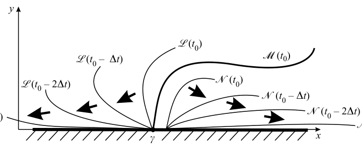
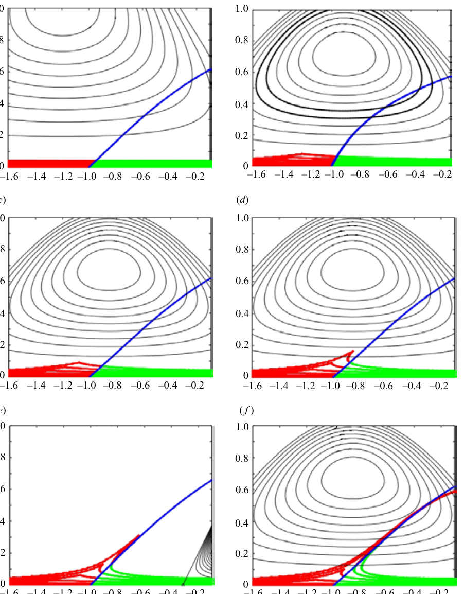
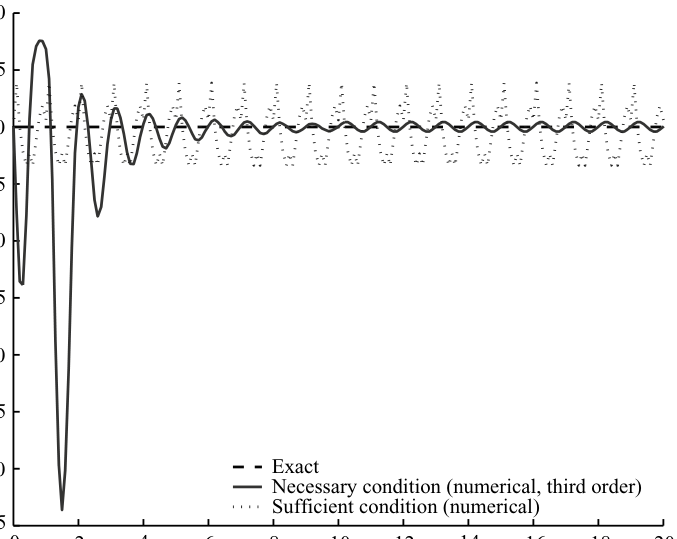
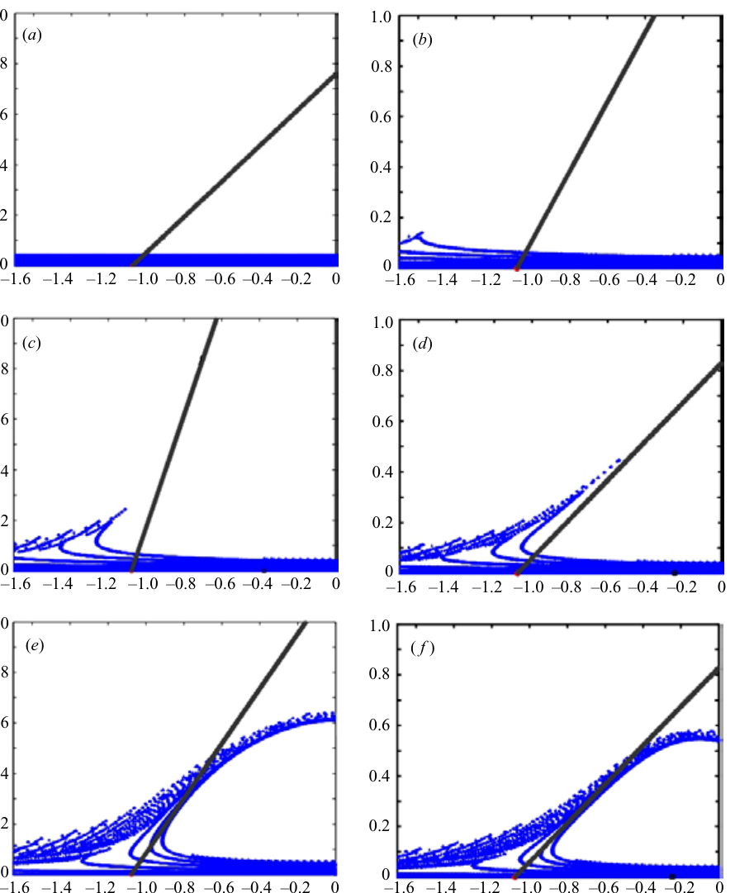

01中文摘要
用动力系统方法把Prandtl定常分离判据推广到具有无滑移边界的二维非定常流动。将分离剖面视为拉格朗日框架中非双曲不稳定流形，得到固定和移动边界上分离与再附位置的显式欧拉型公式，并导出边界附近非定常分离剖面的高阶近似。判据只使用速度场沿边界的导数，因而可用于分离的监测与控制；特别地，可由壁面分布压力和摩阻测量预测非定常分离点与分离角。以二维振荡分离泡的多个变体为例，预测并验证了分离点和分离剖面。
02阅读说明
类型：2004 年 Journal of Fluid Mechanics 理论论文（55 页，含 22 幅图，本文抓取 16 幅）。材料：bundle 全文 3203 行已分三段读到文件末尾；未读取原 PDF。bundle OCR 对普通文本与主要公式可读，但式 (2.30)、(3.18)、(3.19)、(9.4) 等复杂分式有明显错位，未逐符号复现，相关结论按正文叙述与可辨识部分记录。 文章类型：期刊
03一句话核心与三句话摘要
用动力系统的不变流形理论，给出二维非定常分离/再附的精确 Euler 判据与分离剖面高阶近似。
- 作者把非定常分离剖面视为附着在无滑移壁面固定点上的非双曲不稳定流形，由此导出只依赖壁面速度导数的分离位置、分离角与高阶剖面判据。 原文明确
- 这些判据在定常极限退化为 Prandtl 判据，在不可压时间周期流退化为零均值摩阻原理，并被推广到可压缩流、移动边界、再附与一般非周期/随机时间依赖。 原文明确
- 该理论是纯运动学的，不要求速度场满足边界层或 Navier–Stokes 方程，因而可直接用壁面压力与摩阻测量监控分离；验证主要基于二维低阶分离泡模型。 AI概括
04核心内容清单
| 要点 | 类型 | 重要性 | 原文依据 | 属性 |
|---|---|---|---|---|
| 非定常分离剖面被定义为附着在壁面固定点 γ 上的非双曲不稳定流形；它是一条随时间变化的物质线，在 backward time 收缩到 γ。 | 核心定义 | A | p.262，§2.1，Figs.2–3 | 原文明确 |
| 分离剖面的切向斜率 f0 满足 ḟ0=−b f0+a；要求 f0 在 t→−∞ 有界，得到加权摩阻积分有界的必要判据（2.21）。 | 核心推导 | A | p.265，§2.4 | 原文明确 |
| 第二个必要条件是含 u_xy−v_yy 与 v_xy 的积分发散到 +∞（2.22），用于排除静止流体并保证邻近物质线在 backward time 贴回壁面。 | 核心判据 | A | p.266，§2.4 | 原文明确 |
| 有效分离点由加权摩阻积分为零定义，并随 t→−∞ 收敛到真实分离点；这给出仅用壁面速度数据的实用算法。 | 算法 | A | p.266–267，Eqs.(2.26)–(2.27)，Fig.6 | 原文明确 |
| 定常极限下两个判据分别退化为 Prandtl 的 τ_w=0 与 ∂τ_w/∂x<0；分离角退化为 Lighthill 公式 f0=−u_yy/(3u_xy)。 | 一致性检验 | A | p.277–278，§6.1 | 原文明确 |
| 不可压时间周期流的判据退化为周期平均的 u_y 为零与周期平均的 u_xy 为负，与 Shariff 等及 Yuster–Hackborn 的结果一致。 | 一致性检验 | A | p.279–280，Eqs.(6.18)–(6.20) | 原文明确 |
| 不可压分离剖面可显式展开到四阶；系数由壁面处 A、C 的 x/y 导数与历史积分给出，形成可计算的分离角与曲率。 | 高阶近似 | A | p.274–275，Eqs.(3.15)–(3.19) | 原文明确 |
| kinetic 形式把判据写成壁面摩阻、密度、压力梯度与粘性的历史积分；不可压时有效分离点即零均值摩阻点，可压缩时必须用 1/ρ² 加权。 | 可测量形式 | A | p.275–276，Eqs.(4.2)–(4.8) | 原文明确 |
| 可压缩时间周期流的分离点一般不等于零均值摩阻点；分离泡模型给出 γ=−A−√(A²+1)，A 由 d0、β、ω、T 决定。 | 可压缩反例 | A | p.290–291，Eq.(9.10)，Fig.15 | 原文明确 |
| 移动分离由 backward-time 摩阻积分均值的横向零点定位；必要判据的零点随数据增多收敛到移动分离点，充分判据用有限时间尺度 Tm 构造尖锐分离。 | 移动分离理论 | A | p.284–287，Eqs.(8.1)–(8.14)，Figs.12、14、16 | 原文明确 |
| 理论是纯运动学的，不要求速度场满足边界层/Navier–Stokes 方程，也不区分层流与湍流；可直接用壁面分布式压力与摩阻监测分离。 | 理论定位 | A | p.257、p.298–299 | 原文明确 |
| 验证限于二维低阶分离泡模型：时间周期、可压缩周期、指数不稳定与随机振荡四种变体，不是真实 N–S 解。 | 验证边界 | B | p.287–297，§9 | AI概括 |
05引言：研究问题与领域缺口
从 Prandtl (1904) 的定常分离判据出发：壁面摩阻为零且其法向梯度为负。作者指出该判据本质上是运动学条件，可在任意二维可压缩守恒流中成立，但其 Lagrangian 含义——壁面附近流体质点被一条奇异流线收集并抛射——在非定常流中并不等价于“壁面摩阻瞬时为零”。Sears & Telionis (1975) 明确认为非定常流中壁面剪切的消失“does not denote separation in any meaningful sense”，并提出需要预先知道分离速度的 Moore–Rott–Sears 原理；Van Dommelen 等人在 Lagrangian 坐标下把分离与边界层方程奇异性联系起来；Shariff 等与 Yuster & Hackborn 只对时间周期不可压流给出零均值摩阻判据，且后者指出可压缩反例。由此形成研究缺口：缺少适用于可压缩、一般时间依赖、固定与移动分离/再附、且只依赖壁面可测量量的严格判据（p.258–260）。本文目标是建立这样的精确理论（p.260）。
06流动条件与几何构型
| 项目 | 数值/描述 | 依据 | 备注 |
|---|---|---|---|
| 流动维度与边界 | 二维速度场 (u(x,y,t), v(x,y,t))，y=0 为无滑移壁面，u=v=0 | p.262，Eqs.(2.1)–(2.2) | |
| 质量守恒 | 连续性方程 ρ_t+∇·(ρv)=0 在分离点邻域成立，且无源/汇 | p.263，Eq.(2.3) | |
| 密度有界性 | 0<ρ1≤ρ(x,0,t)≤ρ2<∞ | p.264，Eq.(2.7) | |
| 壁面切向密度梯度 | ∫v_xy(x,0,s)ds 一致有界（K1<∞） | p.264，Eq.(2.8) | |
| 分离剖面正则性 | 唯一、非切向、n 阶可微且各阶导数在壁面一致有界（n 阶分离剖面） | p.263，§2.1 | |
| 算例 1：时间周期分离泡 | 二维不可压；ω=2π；β=3；初始时刻 t=0；流场见式 (9.1) | p.287–288，Eq.(9.1)，Fig.13 图注 | |
| 算例 1：验证时刻 | t=0, 8.2, 9.95, 15.0, 18.65, 25 | p.288–289，Fig.13 图注 | |
| 算例 2：可压缩周期分离泡 | ω=1；β=3；d0=1；T=2π/ω；d(t)=d0 (t mod T∈[0,T/4])，d(t)=−d0/3 (t mod T∈(T/4,T)) | p.290–291，Eqs.(9.7)–(9.8)，Fig.15 图注 | |
| 算例 2：验证时刻 | t=0, 7.15, 10.45, 12.65, 23.10, 23.65 | p.291，Fig.15 图注 | |
| 算例 3：指数不稳定分离泡 | 二维不可压；β=2；α=0.007；ω=2π；流场见式 (9.12) | p.292，Eq.(9.12)，Fig.17 图注 | |
| 算例 3：验证时刻 | t=1, 9, 17, 23, 29, 37 | p.294，Fig.18 图注 | |
| 算例 4：随机振荡分离泡 | β=4；A=0.3；B=3；r(t) 为零均值正态随机变量，标准差 0.2；采样步长 Δt=0.2；三次样条插值 | p.296，Eq.(9.17) 及随后的参数说明 | |
| 算例 4：验证时刻 | t=9, 13, 18, 22, 31, 35 | p.297–298，Fig.22 图注 | |
| 充分判据的流动假设 | 不可压；u_xy 连续且存在 c0>0 使 u_xy(γ,0,t)<−c0<0 | p.276–277，Eqs.(5.1)–(5.2) | |
| 移动分离的流动假设 | 不可压；速度场及其一、二阶导数在壁面一致有界 | p.283–287，§8 与 Appendix E | |
| 未覆盖条件 | 滑移边界、三维流未纳入；一般可压缩流只给出必要条件 | p.299，§10 |
07核心现象与关键参数
| 参数 | 定义 | 数值 | 关系/说明 | 依据 |
|---|---|---|---|---|
| γ | 壁面上的分离或再附点横坐标；分离剖面在该点锚定 | 算例 1 为 −1（分离）/ +1（再附）；可压缩算例由 (9.10) 给出；其他算例随时间变化 | x=γ+yF(y,t) | p.262、p.288–296 |
| τ_w | 壁面摩阻（skin friction） | τ_w=νρu_y；判据用 τ_w/ρ² 的 backward-time 积分 | τ_w(x,t)=νρ(x,0,t)u_y(x,0,t) | p.275，Eq.(4.1) |
| ρ | 流体密度 | 沿壁面有界，ρ1≤ρ≤ρ2 | ρ_t+∇·(ρv)=0 | p.263–264，Eqs.(2.3)、(2.7) |
| a(t) | A(γ,0,t)，等于 u_y(γ,0,t) | 由具体流场给出 | a(t)=A(γ,0,t)=u_y(γ,0,t) | p.265，Eq.(2.17) |
| b(t) | B(γ,0,t)，等于 v_y(γ,0,t) | 由具体流场给出 | b(t)=B(γ,0,t)=v_y(γ,0,t)；ρ(t)=ρ(t0)exp[−∫b ds] | p.265，Eqs.(2.17)–(2.18) |
| c(t) | 不可压情形 C(γ,0,t)，与 v_yy 相关 | 由具体流场给出 | c(t)=C(γ,0,t)；不可压时 v_yy=2c，且 a_x+2c=0 | p.273–274，Eqs.(3.4)、(3.6)、(B5) |
| f0(t) | 分离剖面在壁面的斜率（相对壁面法向的 tan） | 由 (3.16) 或 (2.30) 计算 | 分离角 α=tan⁻¹(1/f0) | p.265–268，Eqs.(2.30)、(3.16) |
| f1, f2, f3 | 分离剖面 Taylor 展开的二、三、四阶系数 | 由 (3.17)–(3.19) 计算 | x=γ+f0y+f1y²+½f2y³+⅙f3y⁴ | p.274–275，Eqs.(3.15)–(3.19) |
| T_m(t0) | 移动分离的有限时间尺度，使有效分离点在区间内移动足够慢 | 由 (8.11) 隐式确定；算例 3 见图 17，算例 4 见图 21 | ½δ(t0−Tm,t0)∫max|u_xy|dt=1 | p.287，Eqs.(8.10)–(8.12) |
| δ(t,t0) | 有效分离点在 [t,t0] 内走过的最大 x 距离 | δ=γ+−γ− | I(t,t0)=[γ−,γ+] | p.286–287，Eqs.(8.7)–(8.9) |
| β（模型参数） | 分离泡速度场中振荡项的幅值参数 | 算例 1、2 为 3；算例 3 为 2；算例 4 为 4 | 见式 (9.1)、(9.7)、(9.12)、(9.17) | p.287–296 |
| ω | 振荡角频率 | 算例 1、3 为 2π；算例 2 为 1 | T=2π/ω | p.287–292 |
| d0 | 可压缩分离泡的压缩性强度参数 | 1 | d(t)=d0 或 −d0/3，周期均值零 | p.290–291，Eqs.(9.7)–(9.8) |
| α（不稳定性增长率） | 指数不稳定分离泡中扰动饱和速率 | 0.007 | β(1−e^{−αt}) | p.292，Eq.(9.12) |
| A, B（随机模型） | 随机振荡模型中对数增长幅值与时间偏移 | A=0.3；B=3；r(t) 标准差 0.2 | βxy[A log(t+B)+r(t)] | p.294–296，Eq.(9.17) |
08方法与数据
在无滑移壁面 y=0 上，把速度场写成 ẋ=yA、ẏ=yB（A、B 为 u_y、v_y 沿法向的积分），把分离剖面写成 x=γ+yF(y,t)，代入质点方程得到分离剖面应满足的 PDE（2.14）。对 F 作 Taylor 展开，得到 f0、f1、f2… 的线性常微分方程；要求这些系数在 backward time t→−∞ 保持有界，导出分离的必要条件（2.21）与（2.22），并定义收敛到真实分离点的有效分离点（2.26）–（2.27）。进一步递推得到分离角、曲率与不可压四阶剖面（2.30）、（3.15）–（3.19），以及用壁面压力与摩阻表示的 kinetic 形式（4.2）–（4.8）。对不可压尖锐分离，用锥形区域与 Wazewski 原理证明充分条件（5.1）–（5.2）。移动分离用有限时间不稳定流形：启发式必要判据通过 backward-time 摩阻积分的均值分岔定位（8.1）–（8.6），严格充分判据用有效分离点区间长度与时间尺度 Tm 构造（8.10）–（8.14）。最后在 Ghosh 等人的二维分离泡模型及其可压缩、非定常、随机变体上，用质点对流与数值实现验证（§9，Figs.13–22）。
| 项目 | 内容 | 依据 | 备注 |
|---|---|---|---|
| 总体框架 | Lagrangian 动力系统：把分离/再附剖面视为壁面固定点的非双曲不稳定/稳定流形 | p.257、p.261–262 | |
| 分离方程 | 由无滑移形式 ẋ=yA、ẏ=yB 与剖面图 x=γ+yF(y,t) 推导 F_t=A−BF−yF_yB | p.264–265，Eqs.(2.10)–(2.14) | |
| 渐近展开 | F=f0+yf1+½y²f2+…，逐阶得到线性 ODE；用 backward-time 有界性筛除普通物质线 | p.265–268，§2.4–2.6 | |
| 必要判据 | 加权摩阻积分有界（2.21）与含二阶导数的积分发散（2.22）；有效分离点由积分零点定义 | p.265–267 | |
| 分离角与高阶剖面 | 递推求 f0、f1、f2、f3；不可压时给出四阶显式公式 | p.267–275，§2.6、§3.5 | |
| kinetic 形式 | 用 τ_w、ρ、p_x 重写判据与分离角，得到可由壁面传感器计算的表达式 | p.275–276，§4 | |
| 充分条件 | 对不可压流，在 (γ,0) 附近构造锥形区域 Q，用 Wazewski 原理证明存在唯一不稳定流形并给出尖锐分离 | p.276–277、p.303–307，§5、Appendix D | |
| 移动分离 | 启发式：对 backward-time 摩阻积分作低阶多项式最小二乘拟合，取均值斜率变号点；严格：用有效分离点区间与 Tm 构造有限时间不稳定流形 | p.283–287，§8 | |
| 数值验证 | 在 Ghosh 等 (1998) 分离泡模型及三种变体上积分质点轨迹，比较理论剖面/分离点与质点对流结果 | p.287–297，§9 | |
| 均值提取 | 对必要判据使用三阶或四阶多项式最小二乘拟合；时间步长与拟合阶数影响振荡误差 | p.285–286、p.290 |
09核心推导与公式
把分离剖面看成壁面固定点的非双曲不稳定流形。由于无滑移，固定点是退化的，经典线性化失效；作者改为把速度场写成 ẋ=yA、ẏ=yB，把剖面写成 x=γ+yF(y,t)，得到 F 的 PDE。对 F 作 Taylor 展开后，要求各阶系数在 backward time 有界，就把“存在不稳定流形”转化为壁面速度导数的历史积分条件，并进一步化为只含压力/摩阻的 Euler 判据。
关键假设
- 二维速度场在壁面邻域正则，满足无滑移 u(x,0,t)=v(x,0,t)=0。
- 流场满足质量守恒，分离点邻域无源/汇。
- 密度沿壁面一致有界：0<ρ1≤ρ≤ρ2<∞。
- 壁面切向密度梯度有界，等价于 ∫v_xy ds 一致有界。
- 分离剖面唯一、非切向、n 阶正则（各阶 y 导数在壁面一致有界）。
- 固定分离讨论一般可压缩流；四阶剖面、充分条件与移动分离算法主要针对不可压流。
- 移动分离剖面是有限时间不稳定流形，本质非唯一；需选择吸引率最高或最接近有效分离点的剖面。
- 数值验证使用低阶运动学分离泡模型，不要求其满足 Navier–Stokes 方程。
推导过程
利用 u、v 在壁面为零，把速度场写成 y 乘以沿法向的平均导数；分离剖面写成以 y 为自变量的图 x=γ+yF(y,t)。
把 x=γ+yF 代入质点方程，要求括号内表达式对所有 y≥0 为零，得到 F 必须满足的非线性 PDE。
令 F=f0+yf1+½y²f2+…，在 y=0 取方程得到 f0 的线性 ODE；用密度关系积分求解。
真实分离要求 f0 在 t→−∞ 有界；由密度有界性，这等价于加权 u_y/ρ 的 backward-time 积分有界。
仅有第一判据也会在静止流体中成立；要求邻近物质线在 backward time 全部贴回壁面，得到含 u_xy−v_yy 与 v_xy 的积分必须发散到 +∞。
把第一判据的积分看作 x 的连续函数；利用分离点两侧积分符号相反，定义积分为零的点，并证明它随 t→−∞ 收敛到真实分离点。
逐次对分离 PDE 关于 y 求导并令 y=0，得到 f1、f2、f3 的线性 ODE；要求各阶系数 backward-time 有界，可解出分离角与高阶形状。不可压时 f0 的显式公式如下（f1–f3 的完整分式见原文 3.17–3.19，OCR 有错位，未逐符号复现）。
用 τ_w=νρu_y 重写第一判据与有效分离点；不可压时有效分离点即零均值摩阻点，可压缩时必须用 1/ρ² 加权。分离角也可用 p_x 与 τ_w 的历史积分表示。
若第一判据成立，且 u_xy 在所有时刻严格小于一个负常数，则可在分离点附近构造锥形区域并用 Wazewski 原理证明存在唯一不稳定流形，且分离是尖锐的（质点单调离开壁面）。
移动分离用有限时间不稳定流形描述。启发式必要判据取 backward-time 摩阻积分均值的横向零点；严格充分判据用有效分离点走过的区间与时间尺度 Tm 构造。
对 Ghosh 等的不可压周期分离泡，周期平均 u_y 给出 γ²=1，结合 u_xy 的符号得到分离点 γ=−1、再附点 γ=+1。可压缩变体的分离点由 γ=−A−√(A²+1) 给出；指数不稳定与随机模型的移动分离位置分别由 (9.16)、(9.21) 给出。
适用边界：固定分离只给出必要条件（充分条件仅对不可压、u_xy<−c0<0 成立）；无滑移假设不可去掉；移动分离剖面非唯一，必要判据依赖均值拟合阶数与数据长度，充分判据依赖 Tm 的选择；四阶剖面与 kinetic 分离角公式主要在不可压情形给出；可压缩流的高阶公式冗长且未全部显式化；三维推广未完成；验证仅限二维低阶运动学模型。
10结果：主要发现与关键证据
固定分离的必要判据是加权 backward-time 摩阻积分有界（2.21）；第二个条件（2.22）要求一个含 u_xy、v_yy、v_xy 的积分发散到 +∞，以排除静止流体。定常极限严格退化为 Prandtl 的两个条件，分离角退化为 Lighthill 公式（p.277–278）。不可压周期流退化为零均值摩阻条件（6.18）与零均值 u_xy 条件（6.20），与 Shariff 等及 Yuster & Hackborn 的结果一致（p.279–280）。不可压分离剖面可显式算到四阶（3.15）–（3.19）；在时间周期分离泡（ω=2π, β=3）中，四阶剖面与质点对流结果一致，真实分离点为 γ=−1、再附点为 γ=+1，而瞬时零摩阻点与真实分离点无直接关系（p.288–289，Fig.13）。可压缩周期分离泡（ω=1, β=3, d0=1）中，分离点由（9.10）给出并偏离零均值摩阻点 x=−1，验证了可压缩流中零均值摩阻判据失效（p.290–291，Fig.15）。移动分离方面，必要判据与充分判据在初始瞬态后都能紧密跟踪精确移动分离点（Figs.14、16、20）；随机振荡模型中充分判据比启发式必要判据更准确（p.296–297，Fig.22）。
| 发现 | 证据 | 证据类型 | 强度 | 位置 | 属性 |
|---|---|---|---|---|---|
| 固定非定常分离的必要判据是加权 u_y/ρ 的 backward-time 积分有界；这是 Prandtl 第一条件在一般可压缩非定常流中的精确推广。 | 由 f0 的 ODE 与密度关系 (2.18)–(2.20) 推出 (2.21)；在定常流中 (2.21) 化为 u_y(γ,0)=0。 | 理论结果 | 强 | p.265、p.277–278 | 原文明确 |
| 第二个必要判据要求含 u_xy−v_yy 与 v_xy 的积分发散到 +∞；它排除静止流体，并在定常极限化为 u_xy<0。 | (2.22) 的推导见 Appendix A；定常化简见 (6.8)–(6.9)。 | 理论结果 | 强 | p.266、p.278 | 原文明确 |
| 有效分离点由加权摩阻积分为零定义，并随 t→−∞ 收敛到真实固定分离点；这提供了仅用壁面速度数据的实用算法。 | (2.26)–(2.27) 与 Fig.6 给出收敛过程；数值实现见 Figs.14、16、20。 | 算法与验证 | 强 | p.266–267，Fig.6 | 原文明确 |
| 不可压分离剖面可显式展开到四阶；在时间周期分离泡中，四阶剖面与质点对流结果一致，真实分离点为 γ=−1、再附点为 γ=+1。 | (3.15)–(3.19) 给出 f0–f3；Fig.13 比较理论剖面（蓝线）与绿色/红色质点及瞬时流线。 | 定量验证 | 强 | p.274–275、p.288–289，Fig.13 | 原文明确 |
| 可压缩时间周期流的分离点一般不是零均值摩阻点；在分离泡模型中它由 γ=−A−√(A²+1) 给出并随 d0 偏离 x=−1。 | Eq.(9.10) 与 Fig.15：小方块为瞬时摩阻点，小圆圈为真实分离点；d0≠0 时两者分离。 | 可压缩反例 | 强 | p.290–291，Eq.(9.10)，Fig.15 | 原文明确 |
| 移动分离可由 backward-time 摩阻积分均值的横向零点定位；必要判据随数据增多收敛，充分判据在初始瞬态后也能紧密跟踪精确移动点。 | (8.3) 给出零点条件；Figs.14、16、20 比较 exact、necessary 与 sufficient 三种曲线。 | 移动分离验证 | 强 | p.284–287、p.289–296 | 原文明确 |
| 随机振荡模型中，解析充分判据比启发式必要判据更准确；必要判据只能跟踪大致位置。 | Fig.20 与 Fig.22 的快照显示 sufficient condition 更接近统计精确均值；原文明确称 analytic sufficient criterion “outperforms the heuristic necessary condition in accuracy”。 | 方法比较 | 中 | p.296–297，Figs.20–22 | 原文明确 |
| 理论是纯运动学的，速度场无需满足边界层或 Navier–Stokes 方程；判据只用壁面压力、摩阻、密度与粘性，可直接用于分离监测与控制。 | §4 的 kinetic 形式 (4.2)–(4.8)；§10 明确“the velocity field does not have to solve the boundary-layer equations or the Navier–Stokes equations”。 | 理论定位 | 强 | p.275–276、p.298–299 | 原文明确 |
11机制解释与论证链
分离的 Lagrangian 机制是：无滑移壁面上的固定点是非双曲的，其不稳定流形是一条随时间变化的物质线（分离剖面）。在 forward time，这条线吸引并抛射壁面附近的质点，形成细长的 material spike；在 backward time，普通物质线都贴回壁面，只有分离剖面能保持有界斜率。因此“分离是否发生”被转化为“分离方程的解 f0 是否在 backward time 有界”。数学上，f0 的 ODE 含阻尼项 −b f0 与源项 a=u_y；解由 ρ(t)/ρ(t0) 与加权历史积分组成。要求解有界，就得到 ∫u_y/ρ 有界；要求静止流体也被排除，就得到第二个含二阶导数的发散条件。对不可压流，ρ 为常数，判据退化为摩阻的历史均值；对可压缩流，密度变化使 1/ρ² 成为必要权重，这正是零均值摩阻原理失效的原因。移动分离时固定点本身在动，经典不变流形不存在，作者改用有限时间不稳定流形：分离点对应 backward-time 摩阻积分均值斜率的横向零点；充分判据则要求有效分离点在时间 Tm 内移动足够慢，使得一个锥形邻域内的质点被单调抛射。
12讨论：结论、贡献与局限
作者强调理论的优点是：框架无关、纯运动学、只假设壁面正则与质量守恒，速度场可以是数值、实验或模型场，无需满足边界层或 Navier–Stokes 方程；判据只用壁面压力、摩阻、密度与粘性，因而适合主动流动控制（p.257、p.275–276、p.298–299）。局限包括：无滑移假设是本质的，滑移边界不在覆盖范围；理论不区分层流与湍流，但移动湍流分离的长时数值积分与均值提取仍有困难；三维推广尚未完成；移动分离剖面本质非唯一，时间尺度 Tm 与均值拟合阶数带有人为选择；充分判据只在不可压流中证明；数值验证使用低阶运动学分离泡模型而非真实 Navier–Stokes 解（p.299）。
作者结论
本文建立了二维非定常分离/再附的精确运动学理论：分离剖面是壁面固定点的非双曲不稳定流形，其存在性可由壁面速度导数的 backward-time 积分判据刻画。固定分离的必要条件、有效分离点算法、分离角与高阶剖面公式、kinetic 形式、不可压尖锐分离的充分条件，以及移动分离的必要/充分判据，共同构成一套不依赖边界层或 N–S 求解的框架；它在定常、周期、可压缩周期与随机模型上与已知结果或质点对流一致，并可直接用壁面压力/摩阻测量实施。
局限与未解决问题
无滑移假设是本质的，滑移边界未覆盖；固定分离的充分条件只在不可压且 u_xy<−c0<0 时证明；移动分离剖面非唯一，必要判据依赖均值拟合阶数与数据长度，充分判据依赖 Tm 的选择；四阶剖面与 kinetic 分离角主要针对不可压流；可压缩高阶公式未全部显式化；三维推广未完成；理论不区分层流/湍流，移动湍流分离的长时积分与均值提取仍有困难；验证仅基于二维低阶运动学分离泡模型，而非真实 Navier–Stokes 解。
13对高速流动与工程的意义
把 Prandtl 的定常分离判据提升为适用于可压缩、一般时间依赖、固定与移动分离/再附的统一框架，并给出只依赖壁面可测量量的显式公式。这使分离位置、分离角和分离剖面可以在不求解边界层方程的情况下从实验/CFD 壁面数据中提取，为主动流动控制、分离监测和复杂非定常流动分析提供了可操作的数学基础。
14核心图件




15可引用原文素材
| 原文短句 | 可支持的观点 | 位置 | 使用建议 |
|---|---|---|---|
| “Exact theory of unsteady separation” | 论文标题即主张给出非定常分离的精确理论。 | p.257，标题 | 定位 |
| “separation profiles as non-hyperbolic unstable manifolds” | 核心数学定义：分离剖面是退化不稳定流形。 | p.257，摘要 | 核心思想 |
| “only use the derivatives of the velocity field along the boundary” | 判据只依赖壁面速度导数，便于测量与控制。 | p.257，摘要 | 可测量性 |
| “does not denote separation in any meaningful sense in unsteady flow” | 非定常流中瞬时零摩阻不等于分离，是本文的出发点。 | p.259，Sears & Telionis 引语 | 问题动机 |
| “the only available rigorous unsteady separation criterion” | 此前唯一严格判据是零均值摩阻原理，且适用范围很窄。 | p.260 | 研究缺口 |
| “the zero-mean-skin-friction rule is generally inadequate” | 可压缩流必须用 1/ρ² 加权，不能直接用零均值摩阻。 | p.275 | 可压缩修正 |
| “our analysis does not distinguish between laminar and turbulent separation” | 理论纯运动学，层流/湍流均适用。 | p.299，§10 | 适用范围 |
| “The no-slip assumption (2.2) on the boundary is crucial” | 无滑移是理论成立的关键限制。 | p.299，§10 | 局限 |
16最终核验
| 核验项 | 结论 |
|---|---|
| 仅基于全文 | 仅使用 bundle 全文（3203 行，分三段读到末尾），未读取原 PDF，未引入外部文献、教材推导或未给出的数值。 |
| A 级要点有依据 | A 级要点均可回溯到具体页码与公式/图：核心定义 p.262，判据 (2.21)–(2.22) p.265–266，有效点 p.266–267，四阶剖面 p.274–275，kinetic p.275–276，充分条件 p.276–277，移动判据 p.284–287，可压缩反例 p.290–291，结论 p.298–299。 |
| 属性标注 | three_sentence、core_points、findings 均逐条标注【原文明确】【AI概括】【AI推断】；AI概括只用于压缩原文论证，不把推断冒充原文结论。 |
| 覆盖范围 | 覆盖 §1–§10、Appendix A–E、Figs.1–22 中已抓取的 16 幅图；重点核对 §2（固定分离）、§3（不可压与四阶剖面）、§4（kinetic）、§5（充分条件）、§8（移动分离）、§9（算例）。 |
| 无编造 | 未编造页码、图号、公式或数据；复杂分式 (2.30)、(3.18)、(3.19)、(9.4) 因 OCR 错位未逐符号复现；Fig.13 的时间与参数、各算例参数均照图注与正文抄录。 |
需回原文确认
- 式 (2.30) 与 (3.16)–(3.19) 的完整分式在 OCR 中错位，未能逐符号复算四阶系数。
- 充分条件仅在不可压、u_xy<−c0<0 时证明；可压缩尖锐分离的充分条件是否存在、形式如何，文中未给出。
- 移动分离剖面非唯一；如何在不依赖人为拟合阶数的情况下唯一选择“最有物理意义”的剖面，文中只给出吸引率最高/最接近有效点的原则。
- Tm(t0) 的定义依赖有效分离点区间；当分离点快速移动或数据窗口很短时，算法的收敛性与误差界未定量给出。
- 随机模型中 (9.21) 只是统计精确均值，单个 realization 的分离点偏差多大、如何给置信区间，文中未讨论。
- 三维非定常分离的 Euler 判据尚未建立；作者仅指出拓扑与维度带来技术困难。
- 数值验证全部基于 Ghosh 等低阶运动学模型，尚未在真实 Navier–Stokes 或实验数据上系统检验。
17关联文献
依据标签、板块、构型与作者脉络自动关联，可据此追踪同一问题的前序与后续工作。
18引用格式
选择期刊风格后复制；出处保留原刊名。BibTeX 可直接用于 LaTeX。
引用格式
Haller, G. 2004 Exact theory of unsteady separation for two-dimensional flows. Journal of Fluid Mechanics. https://doi.org/10.1017/s0022112004009929
PDF上传 PDF 并更新本页
本页缺少全文、摘要或图件时，可在浏览器本地补入 PDF。解析完全在本机完成，不上传网络；完成后会更新本页的 PDF 打开链接、原摘要、IMRaD 机器抽取、关键句与含图页面。复杂的公式语义与中文深度解读仍以原文和既有精读记录为准。